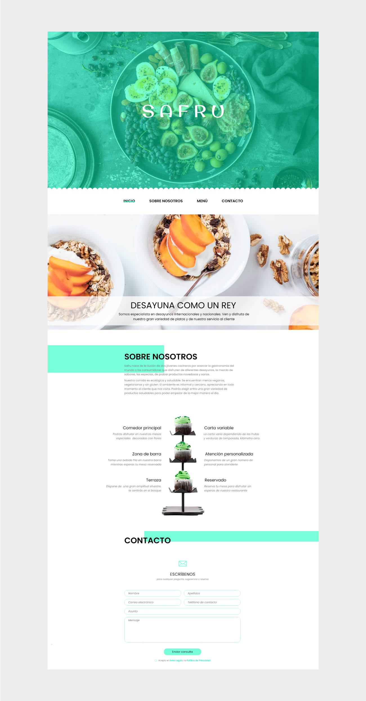
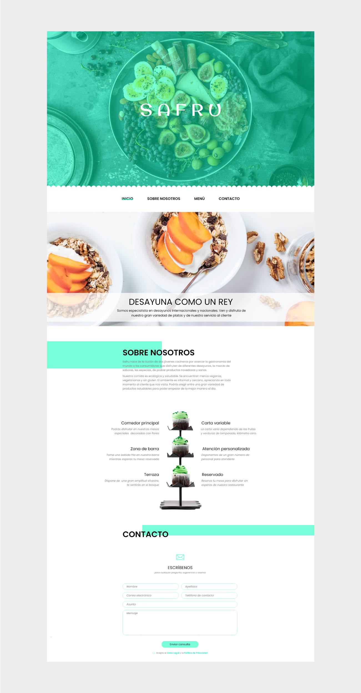
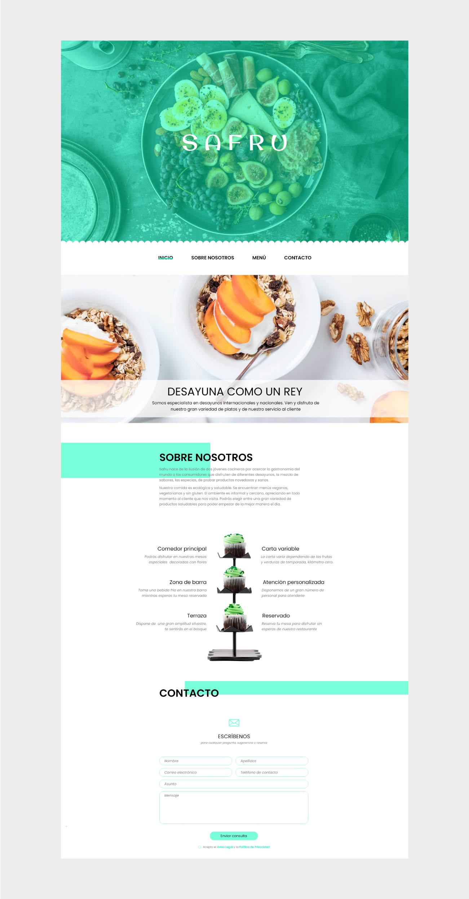

- Página web
Safru
Establecimiento de servicio de desayuno saludable. Ofrece una gran variedad de platos con productos frescos y de temporada. La empresa necesitaba una página web dirigida a jóvenes.
 

Establecimiento de servicio de desayuno saludable. Ofrece una gran variedad de platos con productos frescos y de temporada. La empresa necesitaba una página web dirigida a jóvenes.
